|
EtherCAT Control Framework
v0.9
Implementation of EtherCAT protocol using IgH EtherCAT library for robot controller.
|
|
EtherCAT Control Framework
v0.9
Implementation of EtherCAT protocol using IgH EtherCAT library for robot controller.
|
Considering that you are done with the prerequisites and installation. You are ready to experiment with the software and see its capabilities using example controls below.
Note that for controlling the motors via servo drive, inital configuration must be done with vendors' software. In this case I used EPOS Studio to configure the servo drive for connected motor(s). As another example Elmo has its own software called Elmo Application Studio to configure the motors as well. You will only have to do the configuration once, then parameters will be saved. We could have added those configurations to the software but, since it will require too many input parameters I chose not to add it.
Additionally, it is important to understand modes of operation of the motor drive, for that I recommend you to check EPOS firmware specifications file, starting from chapter 3 page 19.
Now we can proceed with examples. Examples contains:Please do not follow these examples blindly and use them as just a reference. There might be some bugs, or errors in the software, for that please read comments in the code carefully, and understand the code before using it. You can always contact me, if you have some issues understanding the code, or if you have any questions. CONTACT : veysi.adin@outlook.com
All prepared examples here are just for reference, in the hope that it will be useful, but WITHOUT ANY WARRANTY; without even the implied warranty of MERCHANTABILITY or FITNESS FOR A PARTICULAR PURPOSE. See the GNU General Public License for more details.
Now in this example, we have three servo drives as slaves, and three motors. We are going to control them in velocity mode with 1kHz frequency and active distributed clock. As a controller we will use Xbox controller or keyboard.
We will start our modifications from the ecat_globals.hpp file. In this file we have to change several parameters:
Once we're done with initial costumization we can proceed with main.cpp file. In this file we have to specify how to handle controller inputs. By default controller is assumed to be Xbox controller. If you want to use Xbox, it is nice to understand how Xbox controller data is structred. For that, I recommend using jstest-gtk package.
Run jstest-gtk and choose your connected controller by
It will have an interface like in picture below. As shown in picture below, range for Xbox controller axes are -/+ 32767 and we have 10 digital buttons. We can use axis data to control our motor in velocity mode.
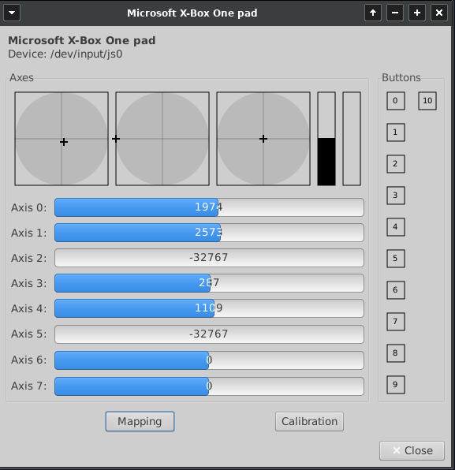As you can see the code below in main.cpp file is reading xbox controller values and passes it to ethercat thread. In this case we normalized axes values by diving the data that we get to 32767, therefore, range is now -/+1.
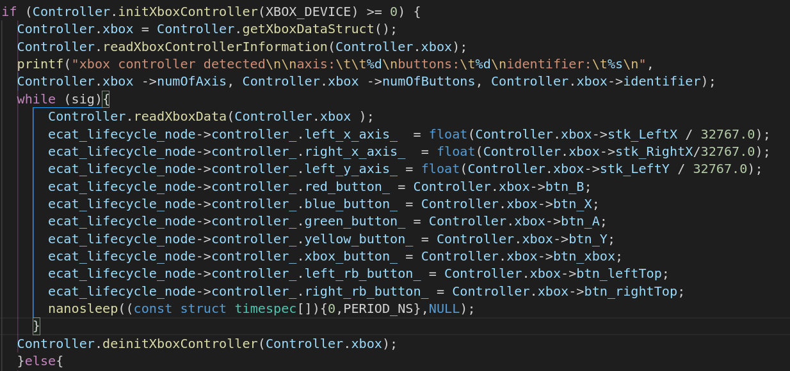If you don't have Xbox or any other controller don't worry, you can still use your keyboard to send commands, it won't be as convenient as using controller, but it will do the job for test purposes. Note that this is the default setup, you can tinker with parameters to make it suitable to your application.
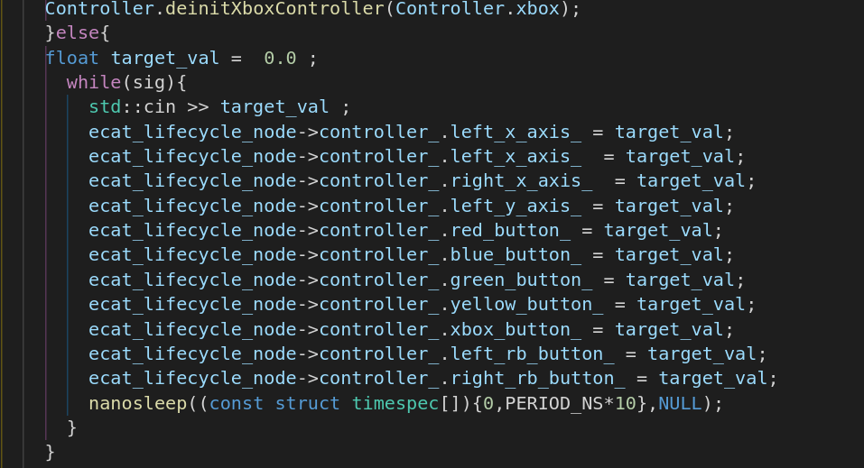Now that we costumized parameters for the controller, now we can costumize the application. For that, we will have to modify ecat_lifecycle.cpp file.
In this file we will modify configuration function for our application, for that, we will modify SetConfigurationParameters() function. See code snippet below. Here we specify profile acceleration, deceleration, velocity and position limits for our servo drives. If you need to do additional configuration, you will have to modify, ProfileVelocityParam struct and SetProfileVelocityParametersAll() function.
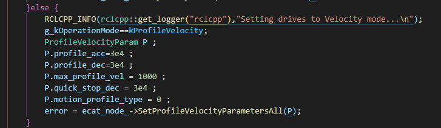We are almost done, now before running the application we will have to write our control algorithm in ecat_lifecycle.cpp file by modifying UpdateVelocityModeParameters() function. In this function acquired control parameters from controller is assigned to target velocity command that will be sent to the drives. See snippet below.

We are done, now all you have to do is compile the program and run it by:
That's all about controlling your motors in velocity mode. If you need to do additional configuration and don't know how to do it, or found a bug in the code please let me know via e-mail veysi.adin@outlook.com
Now in this example we have one servo drive as a slave, and one motor. We are going to control the motor in position mode with 1kHz frequency and active distributed clock. As a controller we will use Xbox controller or keyboard.
In all control modes configuration will start from the ecat_globals.hpp file. In this file we will to change several parameters:
Note that when you change any operation mode to 1, all other modes must be 0. For example, we set POSITION_MODE to one, and other modes (Velocity,CSV,CSP,CST) must be zero.
Once we're done with initial costumization we can proceed with main.cpp file. In this file we have to specify how to handle controller inputs. By default controller is assumed to be Xbox controller. If you want to use Xbox, it is nice to understand how Xbox controller data is structred. For that, I recommend using jstest-gtk package.
Run jstest-gtk and choose your connected controller by
It will have an interface like in picture below. As shown in picture below, we have 10 digital buttons. We can use button data to control our motor in position mode.
As you can see the code below in main.cpp file is reading xbox controller values and passes it to ethercat thread. In this example, we will use button information to send predefined positions to the motor.
If you don't have Xbox or any other controller don't worry, you can still use your keyboard to send commands, it won't be as convenient as using controller, but it will do the job for test purposes. Note that this is the default setup, you can tinker with parameters to make it suitable to your application.
Now that we costumized parameters for the controller, now we can costumize the application. For that, we will have to modify ecat_lifecycle.cpp file.
In this file we will modify configuration function for our application, for that, we will modify SetConfigurationParameters() function. See code snippet below. Here we specify profile velocity, acceleration, deceleration, velocity and position limits for our servo drives. If you need to do additional configuration, you will have to modify,ProfilePosParam struct and SetProfilePositionParametersAll() function.
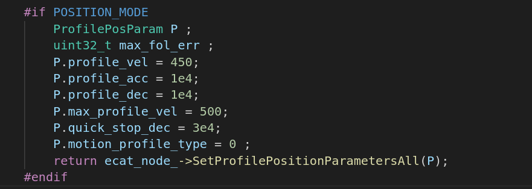We are almost done, now before running the application we will have to write our control algorithm in ecat_lifecycle.cpp file by modifying UpdatePositionModeParameters() function. In this function based on acquired button values from controller predefined positions such as 30 degree clock-wise, counter clock-wise positions assigned to target position command that will be sent to the drive. See snippet below.
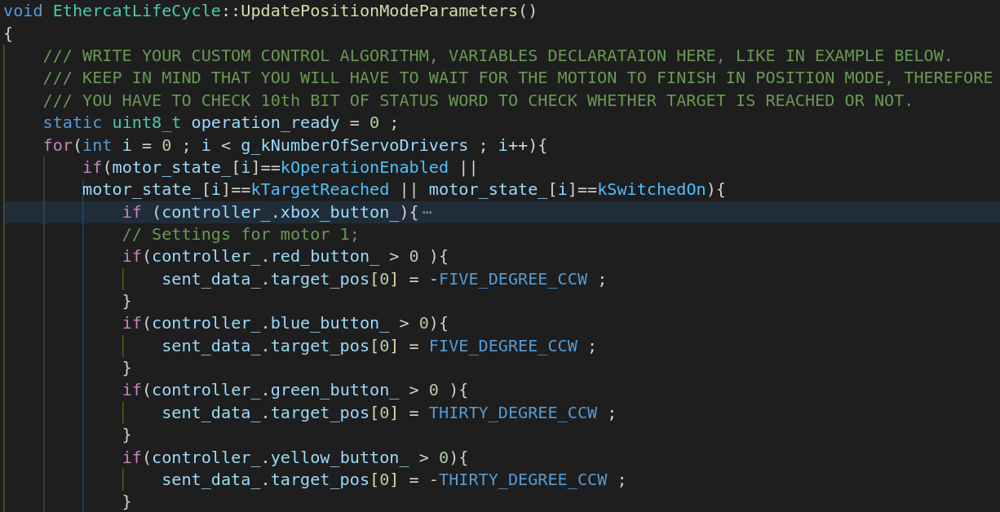We are done, now all you have to do is compile the program and run it by:
That's all about controlling your motors in position mode. If you need to do additional configuration and don't know how to do it, or found a bug in the code please let me know via e-mail veysi.adin@outlook.com
Now in this example we have three servo drives as slaves, and three motors. We are going to control them in cyclic synchronous velocity mode with 1kHz frequency and active distributed clock. As a controller we will use Xbox controller or keyboard.
We will start our modifications from the ecat_globals.hpp file. In this file we have to change several parameters:
Once we're done with initial costumization we can proceed with main.cpp file. In this file we have to specify how to handle controller inputs. By default controller is assumed to be Xbox controller. If you want to use Xbox, it is nice to understand how Xbox controller data is structred. For that, I recommend using jstest-gtk package, installations and running steps are explained in above examples. Now we will proceed with modifying main.cpp file.
As you can see the code below in main.cpp file is reading xbox controller values and passes it to ethercat thread. In this case we normalized axes values by diving the data that we get to 32767, therefore, range is now -/+1.
If you don't have Xbox or any other controller don't worry, you can still use your keyboard to send commands, it won't be as convenient as using controller, but it will do the job for test purposes. Note that this is the default setup, you can tinker with parameters to make it suitable to your application.
Now that we costumized parameters for the controller, now we can costumize the application. For that we will have to modify ecat_lifecycle.cpp file.
In this file we will modify configuration function for our application, for that, we will modify SetConfigurationParameters() function. See code snippet below. Here we specify profile acceleration, deceleration, velocity and position limits for our servo drives. If you need to do additional configuration, you will have to modify, CSVelocityModeParam struct and SetProfileVelocityParametersAll() function.
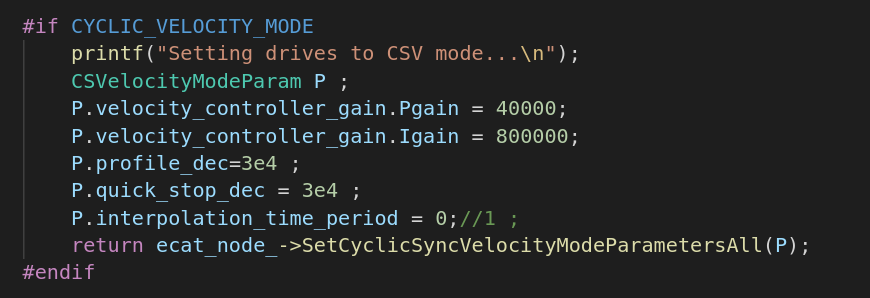We are almost done, now before running the application we will have to write our control algorithm in ecat_lifecycle.cpp file by modifying UpdateCyclicVelocityModeParameters() function. In this function acquired control parameters from controller is assigned to target velocity command that will be sent to the drives. See snippet below.
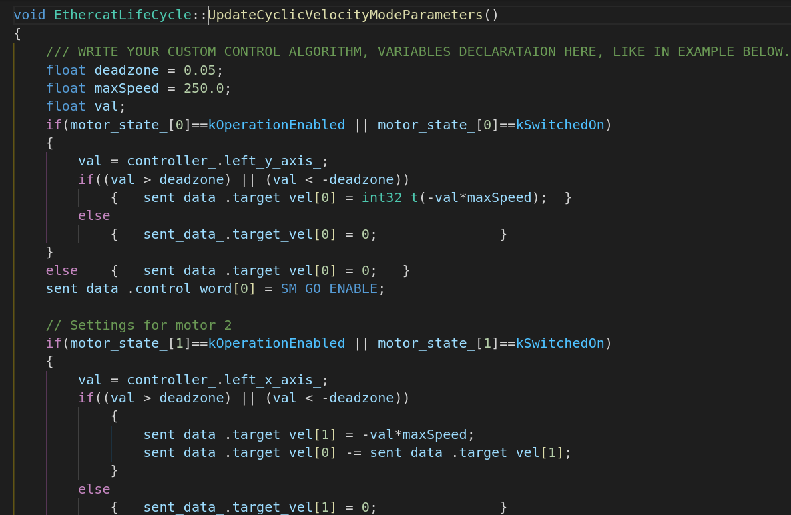We are done, now all you have to do is compile the program and run it by:
If you tried other examples, you will see that there are similiar steps to control your motors in different modes.
That's all about controlling your motors in cyclic synchronous velocity mode. If you need to do additional configuration and don't know how to do it, or found a bug in the code please let me know via e-mail veysi.adin@outlook.com
Now in this example we have one servo drive as a slave, and one motor. We are going to control the motor in cyclic synchronous position mode with 1kHz frequency and active distributed clock. As a controller we will use Xbox controller or keyboard.
In all control modes configuration will start from the ecat_globals.hpp file. In this file we will to change several parameters:
Once we're done with initial costumization we can proceed with main.cpp file. In this file we have to specify how to handle controller inputs. By default controller is assumed to be Xbox controller. If you want to use Xbox, it is nice to understand how Xbox controller data is structred. For that, I recommend using jstest-gtk package, installations and running steps are explained in above examples. Now we will proceed with modifying main.cpp file.
As you can see the code below in main.cpp file is reading xbox controller values and passes it to ethercat thread. We will use axis data from controller to continuously send target position value with small increments.
If you don't have Xbox or any other controller don't worry, you can still use your keyboard to send commands, it won't be as convenient as using controller, but it will do the job for test purposes. Note that this is the default setup, you can tinker with parameters to make it suitable to your application.
Now that we costumized parameters for the controller, now we can costumize the application. For that, we will have to modify ecat_lifecycle.cpp file.
In this file we will modify configuration function for our application, for that, we will modify SetConfigurationParameters() function. See code snippet below. Here we specify profile velocity, acceleration, deceleration, velocity and position limits for our servo drives. If you need to do additional configuration, you will have to modify,CSPositionModeParam struct and SetProfilePositionParametersAll() function.
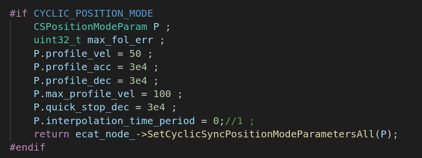We are almost done, now before running the application we will have to write our control algorithm in ecat_lifecycle.cpp file by modifying UpdateCyclicPositionModeParameters() function. In this function based on acquired contoller axis values and actual position value, new target position is created and assigned to target position command that will be sent to the drive. See snippet below.
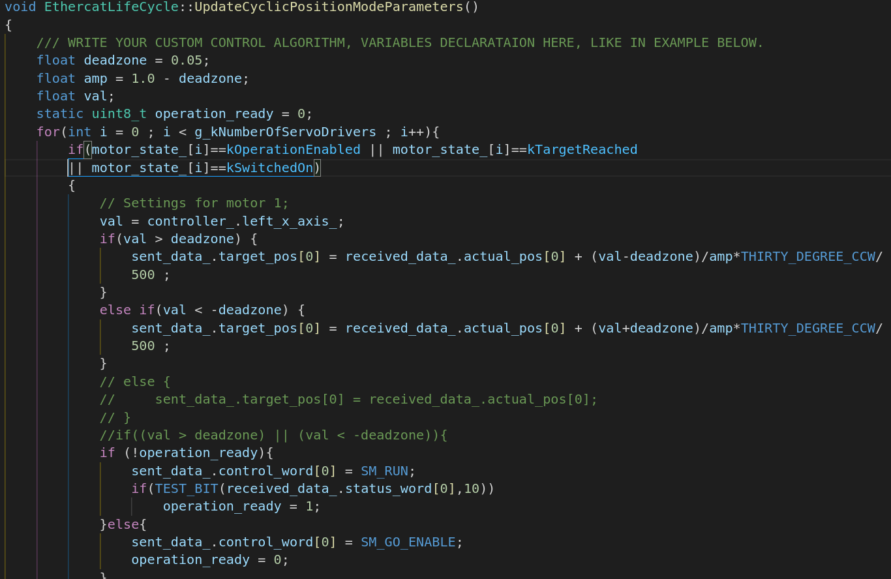We are done, now all you have to do is compile the program and run it by:
That's all about controlling your motors in cyclic synchronous position mode. If you need to do additional configuration and don't know how to do it, or found a bug in the code please let me know via e-mail veysi.adin@outlook.com
Now in this example we have one servo drive as a slave, and one motor. We are going to control the motor in cyclic synchronous torque mode with 1kHz frequency and active distributed clock. As a controller we will use Xbox controller or keyboard. Note that in torque mode target torque is specified in per thousand of “Motor rated torque” value.
In all control modes configuration will start from the ecat_globals.hpp file. In this file we will to change several parameters:
Once we're done with initial costumization we can proceed with main.cpp file. In this file we have to specify how to handle controller inputs. By default controller is assumed to be Xbox controller. If you want to use Xbox, it is nice to understand how Xbox controller data is structred. For that, I recommend using jstest-gtk package, installations and running steps are explained in position and velocity mode examples above. Now we will proceed with modifying main.cpp file.
As you can see the code below in main.cpp file is reading xbox controller values and passes it to ethercat thread. We will use axis data to send target torque value to the motor.
If you don't have Xbox or any other controller don't worry, you can still use your keyboard to send commands, it won't be as convenient as using controller, but it will do the job for test purposes. Note that this is the default setup, you can tinker with parameters to make it suitable to your application.
Now that we costumized parameters for the controller, now we can costumize the application. For that, we will have to modify ecat_lifecycle.cpp file.
In this file we will modify configuration function for our application, for that, we will modify SetConfigurationParameters() function. See code snippet below. Here we specify profile velocity, acceleration, deceleration, velocity and position limits for our servo drives. If you need to do additional configuration, you will have to modify, CSTorqueModeParam struct and SetProfilePositionParametersAll() function.
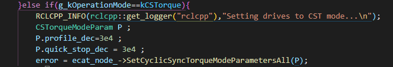We are almost done, now before running the application we will have to write our control algorithm in ecat_lifecycle.cpp file by modifying UpdateCyclicTorqueModeParameters() function. In this function based on acquired contoller axis value, new target torque is created and assigned to target torque command that will be sent to the drive. See snippet below.
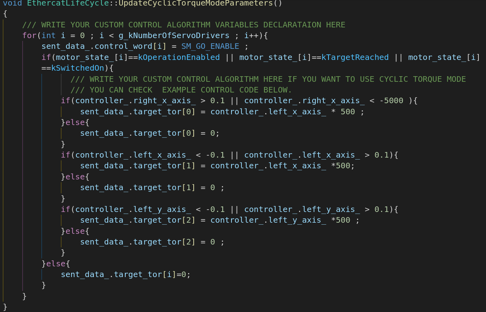We are done, now all you have to do is compile the program and run it by:
That's all about controlling your motors in cyclic synchronous torque mode. If you need to do additional configuration and don't know how to do it, or found a bug in the code please let me know via e-mail veysi.adin@outlook.com
Now in this example we want to modify default PDO configuration. There are two ways to map custom PDOs, one is that you can modify MapDefaultPdos() function, or you can use MapCustomPdos() function. In this example, we will modify MapDefaultPdos() function. When we look at the MapDefaultPDOS() function we see default PDO mapping in picture below. It is important to understand that Rx/Tx terms are based on slave, meaning that TxPDO values will be transmitter from servo drive to the master. RxPDO values will be commands that we sent from master to servo drive.
Object dictionary and all PDO mappable objects can be found in your vendors' documentation, in this case Maxon motor provides EPOS firmware specifications file. Note that object must be PDO mappable otherwise you might face an error in the software.
Although default mapped PDOs are sufficient for most applications, for the sake of this example we will add one more PDO to the default PDO configuration. In this example we will add Error Code object (index:0x603F,subindex:0x00,datatype:uint16). To be able to add this object to the default PDO configuration, we will first check whether it is already defined in the object_dictionary.hpp file. If it is not defined, we will add it. Please use same naming convention while doing any modificaiton. 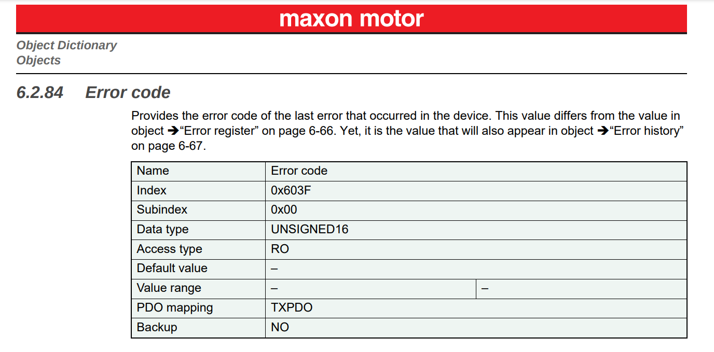
Luckily it is already defined, however it is not PDO mapped. We will have to do several modifications in several files.
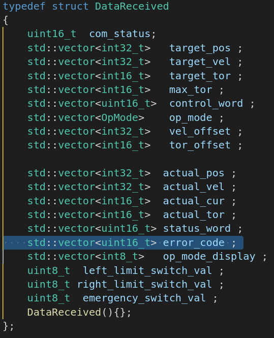
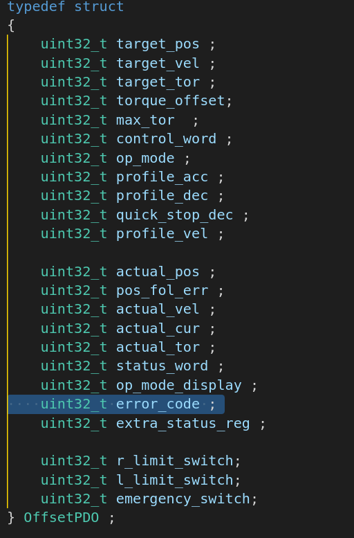
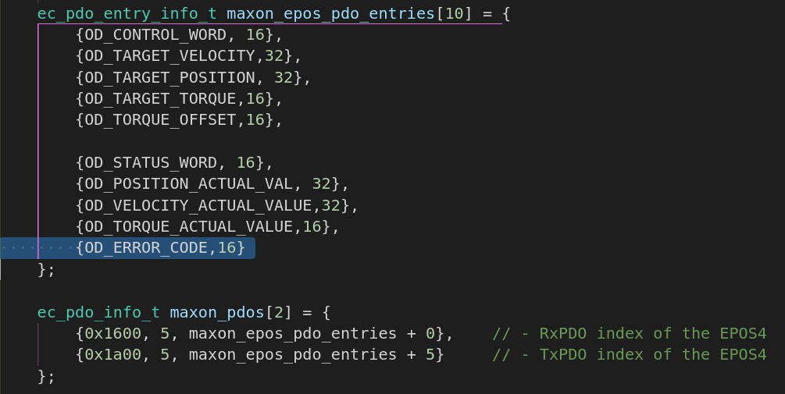
Once you add the error_code variable to the PDO mapping, you will have to register the PDO and obtain offset for it.
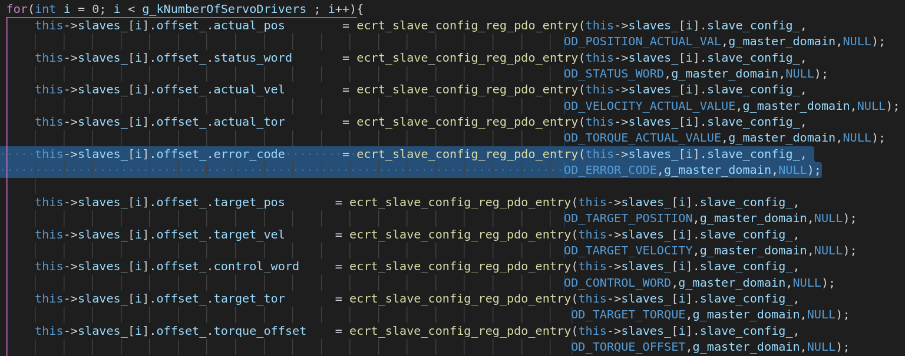
Now we are done in this ecat_node.cpp file, and we will do our final modifications in the ecat_lifecycle.cpp file. In this file we have to modify several functions starting from constructor of the class and to the reading data from slaves. We will modify constructor of the class shown in picture below.

Second we will change ReadFromSlavesFunction(), and read the ERROR_CODE object, as shown in code snippet below. Notice that EC_READ_U16 corresponds to reading uint16 data type. If you want to read different data type you will have to change it to EC_READ_/DATA_TYPE/.
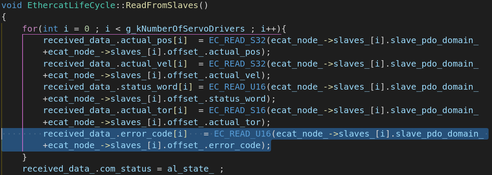
Once we did that, now we have acces to the ERROR_CODE object, we can decide what to do with the error code data that is acquired from slaves. As an example I will modify StartPdoExchange function, I will check error code object of each drive and stop the PDO communication if any drive has error.
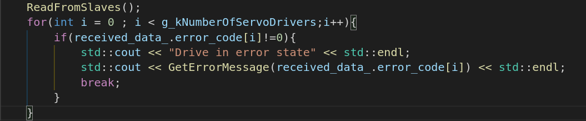
That's all about adding custom PDO mapping. If you need to do additional configuration and don't know how to do it, or found a bug in the code please let me know via e-mail veysi.adin@outlook.com
Now in this example we will add extra configuration parameter, in position mode. You can costumize configurations in different modes as well, and the steps will be same. The configuration assignment functions are defined in ecat_node.cpp file in functions:
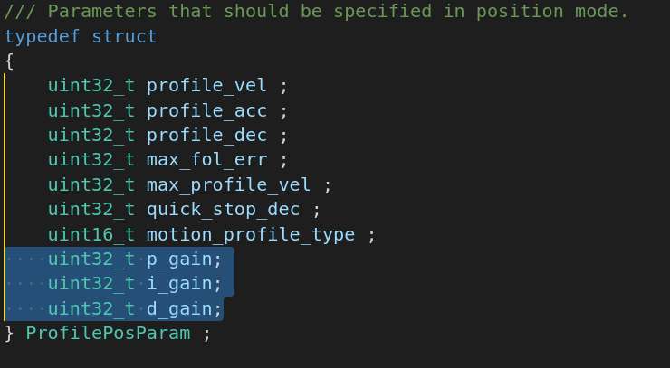
Now we will modify SetProfilePositionParametersAll() function in ecat_node.cpp file. Notice that, data types must be same as in object dictionary, otherwise you will face an error.
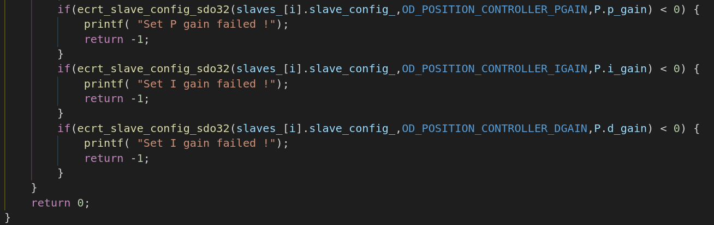
Now finally we will assign gain values to the corresponding values in SetConfigurationParameters() function in ecat_lifecycle.cpp file.

That's all about adding custom SDO configuration. If you need to do additional configuration and don't know how to do it, or found a bug in the code please let me know via e-mail veysi.adin@outlook.com
Now in this example we will have EasyCAT custom slave. EasyCAT allows an Arduino to be used as a EtherCAT slave in the bus. We are using this product to add any sensor or actuator in our communication bus. Adding this custom slave to the bus is a bit tricky, because there isn't any standard governing PDO and SDO structure of custom slave. If you remember we had CiA402 standard for servo drives, standardizes object dictionary, SDO and PDO structure. You'll need to know a lot about your custom slave. I won't be explaining about EasyCAT much, you can visit the product page for more information.
For custom slaves it is important to know current PDO entries, for that IgH Etherlab provides nice terminal tools where we can and get some information from our slaves, which makes it easy to debug your system. In terminal you can type
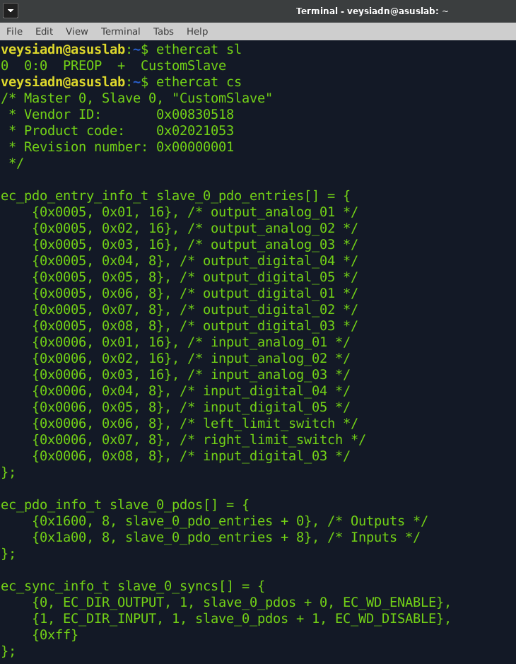
Now we know about the current PDO mapping of our custom slave we can start for modifications to the software to send/receive data to/from our slave. We will start costumization from the ecat_globals.hpp file. Considering this example, we don't have any servo drives as slave, we only have one custom slave therefore, in this file we will change several parameters:
Once we did initial configuration in ecat_globals file, we will proceed with ecat_node.cpp file. Since our custom slave doesn't need any SDO configurations we will directly modify MapDefaultPdos() function in ecat_node.cpp file. Notice that we copied the "ethercat slave" terminal command output and pasted in to the function.
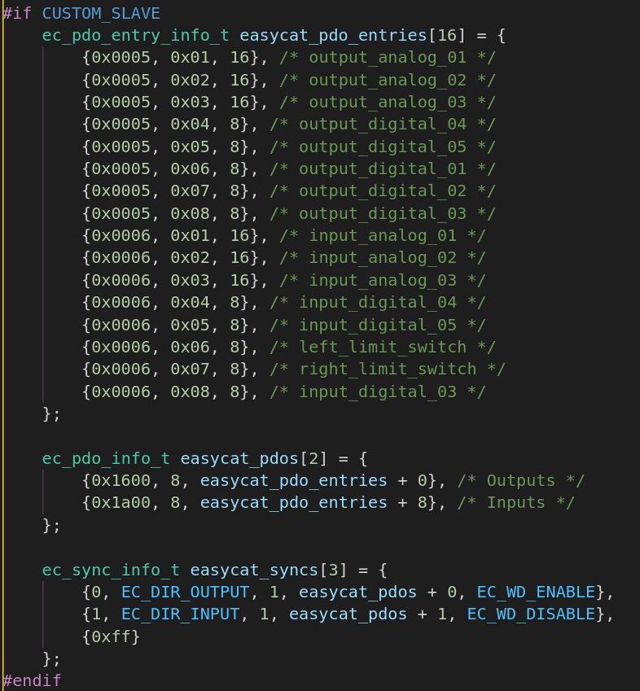
Now we will register PDOs and obtain offsets for each PDO entry, we will do this in the same file and function. Next steps are similiar to the adding custom PDOs, you can follow same steps as in adding custom PDOs. For this example, I will only add three PDO entry, since there are three different switches connected to the EasyCAT slave. Notice that OffsetPDO struct must have a member variable for each PDO entry, and if entry type is TxPDO you will add member variable to the DataReceived struct, if entry type is RxPDO you will add member variable to the DataSent struct.
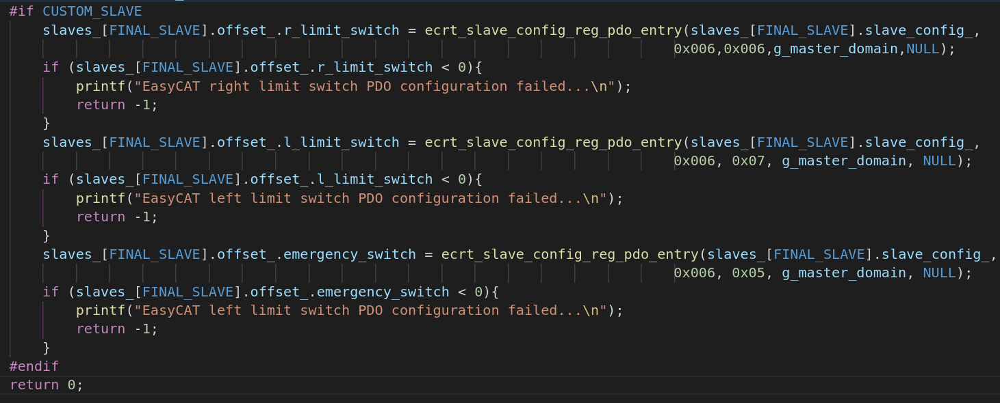
Now as a final step once you succesfully register your PDOs, you'll need to modify ReadFromSlaves function in ecat_lifecycle.cpp file. And you can use the values that you read in your Update'OperationMode'Parameters() functions. It is important to read the correct data type, otherwise you might face an error.
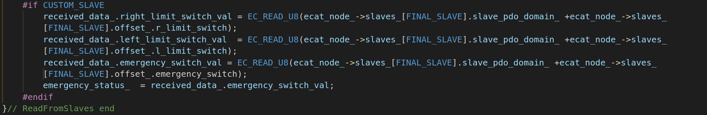
That's all about adding custom slave to your bus. If you need to do additional configuration and don't know how to do it, or found a bug in the code please let me know via e-mail veysi.adin@outlook.com
Now in this example we will isolate one of our CPU cores to dedicate it for EtherCAT communication task. To do that, you will need to know how many cores your CPU has. Check your number of cores, in terminal type:
You will get a number of cores, for example if you have two cores, you will get: 2 as output. Once you know number of cores in your system, you can select which core to isolate. I recommend isolating last core in your CPU, For example if you have 4 cores you can isolate 4th core. CPU isolation can be done in several ways, easiest way to do it is to add isolcpus and nohz_full parameters in your grub file. As an example, my laptop has 6 cores, and I will isolate 5th and 6th core. Note that numbering core starts from zero, meaning first core is numbered as zero.In terminal type:
As shown in picture below, you can add isolcpus=4,5 and nohz_full=4,5 to the GRUB_CMDLINE_LINUX_DEFAULT="" line.
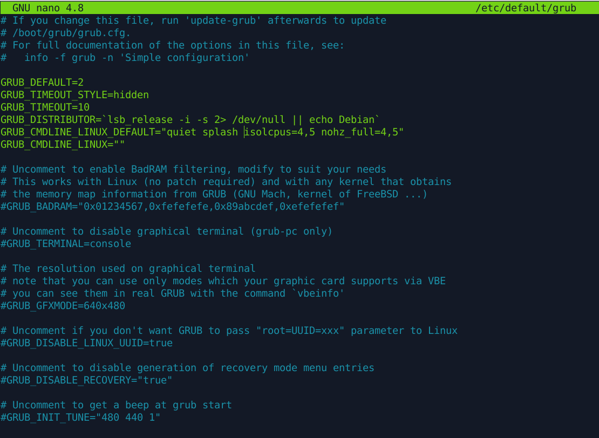Now you can update grub and reboot your system and check if CPU isolation is succesfull or not:
After reboot type nproc again and you will see that number of cores seen by operating system is reduced.
Now that we isolated two cores from operating system and we can use isolated cores for our task. To do that, Linux provides CPU_SET macro, and sched_setaffinity functions which is used to set CPU affinity. When you check ecat_lifecycle.cpp file we have one function called SetComThreadPriorities() which is used to set CPU affinity and priority. As an example shown in below snippet from that function, I isolated and dedicated 5th and 6th cores of my CPU to the EtherCAT communication task. Don't forget to recompile the code after you did any change.
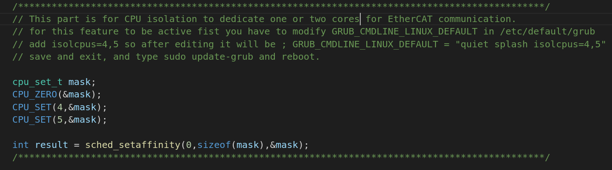That's all about isolating CPU core and dedicating it for the communication task. If you need to do additional configuration and don't know how to do it, or found a bug in the code please let me know via e-mail veysi.adin@outlook.com
Congratulations, if you have come this far, and tried all examples, now you have basic understanding of our control software, EtherCAT protocol and real-time systems. I hope these tutorials will help you to save time and build your own applications. Good luck, in your robotic journey.
Please note again that, you must not follow these examples blindly and you must use them just as a reference. There might be some bugs, or errors in the software, for that please read comments in the code carefully, and understand the code before using it.
All prepared examples here are just for reference, in the hope that it will be useful, but WITHOUT ANY WARRANTY; without even the implied warranty of MERCHANTABILITY or FITNESS FOR A PARTICULAR PURPOSE. See the GNU General Public License for more details.
 1.9.3 &
Modified by Veysi ADIN®
1.9.3 &
Modified by Veysi ADIN®